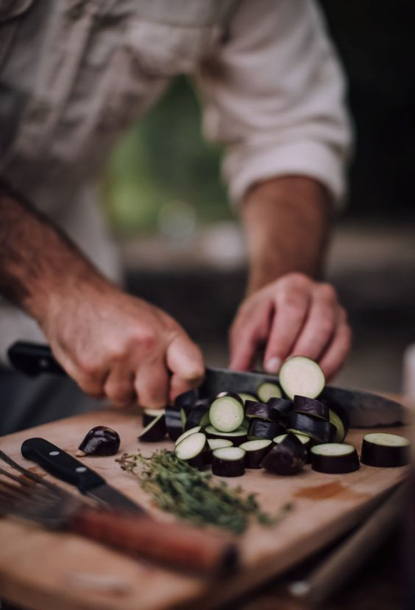
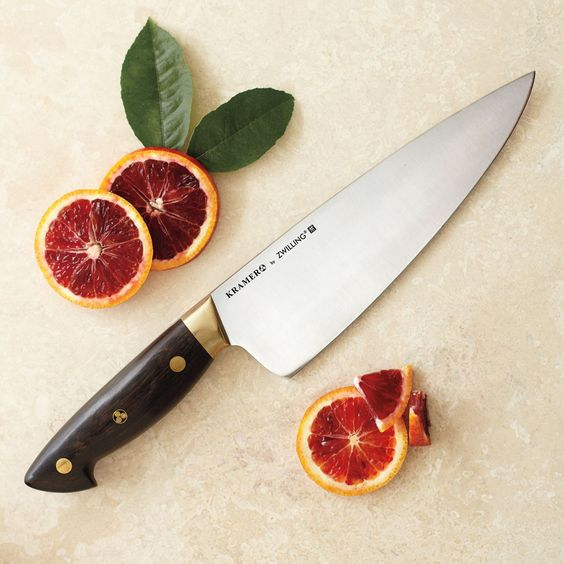

<div class="view view-main">
        <!-- Initial Page, "data-name" contains page name -->
        <div data-name="nivel_basico" class="page">

          <!-- Scrollable page content -->
          <div class="page-content basico_nm">
            <!-- Link to another page -->
               <div class="navbar">
              <a href="/inicio/" class="link back"><i class="back fas fa-arrow-circle-left"></i></a>
          </div>
           <div class="cuchillos_mp">
             
              <div class="texto_mp">
                 <h2>CUCHILLOS</h2>
                 <h3>Bien usados funcionan mejor</h3>

              </div>

           </div>
           <div class="cuchillos_mp">

              <div class="texto_mp2">
                 <h2 id="como1">Cómo afilar un cuchillo</h2>
                 <h4 id="des_mp_c">Los cuchillos en cada cortada van perdiendo filo, lo que hace que la tarea de picar se tome algo complicada e incluso peligrosa. Esta es la razón por la que debes procurar afilar los cuchillos después de haberlos usado. Existen dos formas de sacarle filo: la primera es, con una piedra y la segunda con la chaira, en ambos casos los movimientos a ejecutar son iguales</h4>

              </div>
              <div class="video_c"><iframe width="140" height="79" src="https://www.youtube.com/embed/_n2VgmBZUvY" frameborder="0" allow="accelerometer; autoplay; encrypted-media; gyroscope; picture-in-picture" allowfullscreen></iframe></div>


           </div>
           <div class="div_mp">
               <h2>Partes de un cuchillo</h2>
           </div>
           
           <div class="cuchillos_mp">

              <div class="texto_mp2">
                 <h2 id="como2">Cómo agarrar un cuchillo correctamente</h2>

              </div>
              <div class="video_c">
                  <iframe width="140" height="79" src="https://www.youtube.com/embed/3Gqk_UzfdgM" frameborder="0" allow="accelerometer; autoplay; encrypted-media; gyroscope; picture-in-picture" allowfullscreen></iframe></div>

           </div>


 <div class="botonrosa_mp">
                   <a href="/inicio/" class="btnrosa_mp link">Terminar</a>
               </div>


          </div>
        </div>
      </div>
